Shiraoi
Shiraoi · Hokkaido
Shiraoi
Highlighted on the Hokkaido map.
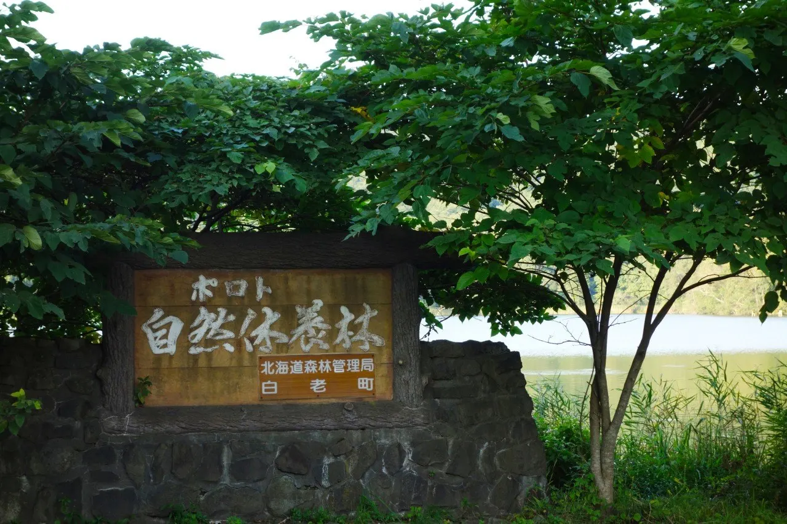
Stay
haku hostel
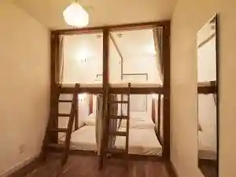
Haku Hostel
星野リゾート 界 ポロト
Hoshino Rizooto Kai Poroto
リブマックスリゾートウポポイ白老温泉
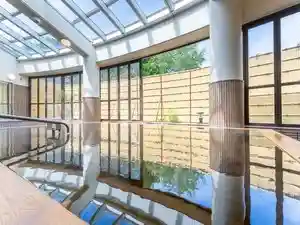
Ribumakkusurizootoupopoi Shiraoi Onsen
ピリカレラホテル
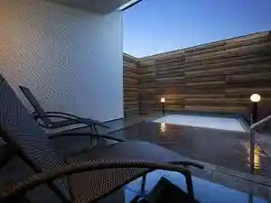
Pirikarerahoteru
ゲストハウス 暖
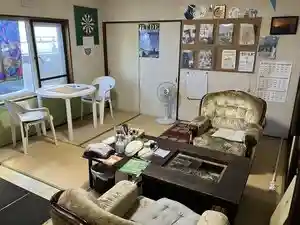
Gesutohausu Dan
白老レンタルハウス
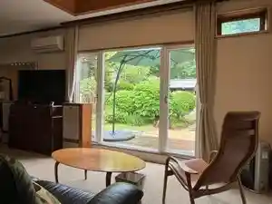
Shiraoi Rentaruhausu
３つの音 はなれ
3 Tsuno Oto Hanare
民宿 元和や
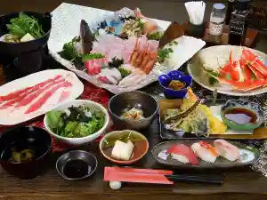
Minshuku Genna Ya
ホテル オーシャン
Hoteru Ooshan
豊水館
Housui Kan
海のうた海鮮と温泉宿
Umi Nouta Kaisen To Onsenyado
ゲストハウスたらこ湯
Gesutohausu Tarako Yu
Dining
天野ファミリーファーム
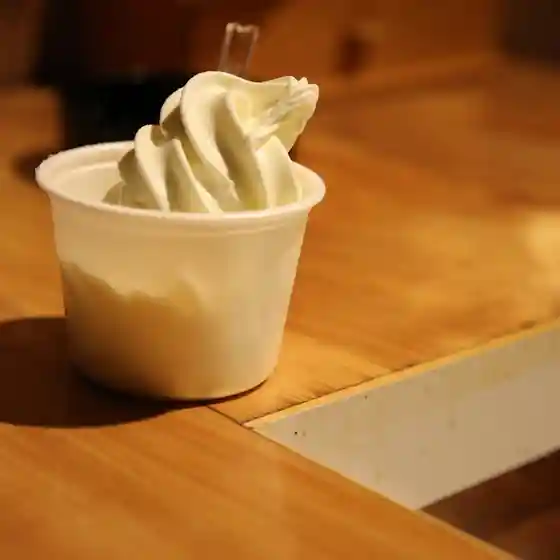
Amano Famiriifaamu
居酒屋 蝦夷や
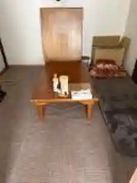
Izakaya Ezo Ya
北のランプ亭
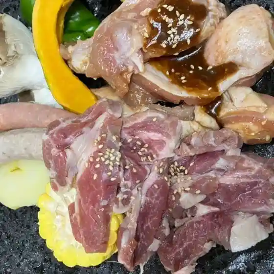
Kita No Ranpu Tei
白老牛の店いわさき おもてなし亭
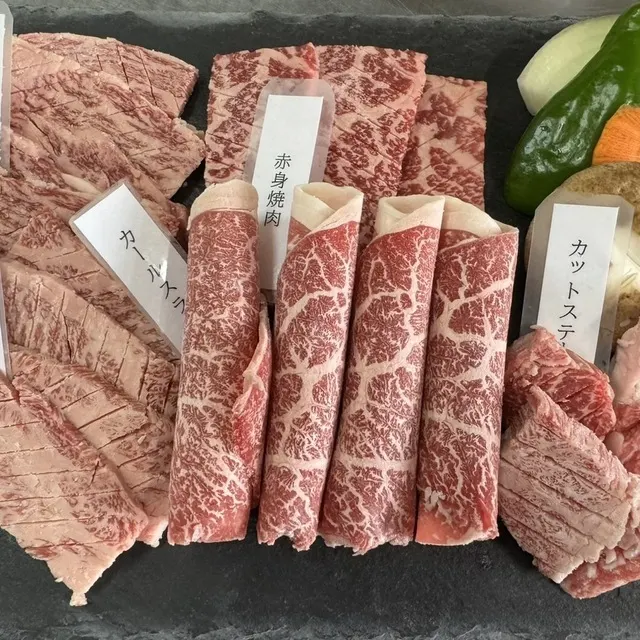
Shiraoi Ushi No Mise Iwasaki Omotenashi Tei
ウエムラ・ベース
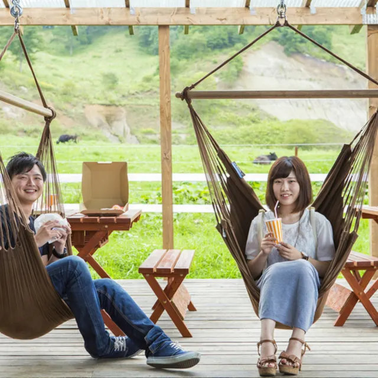
Uemura Beesu
ウエムラ・ビヨンド
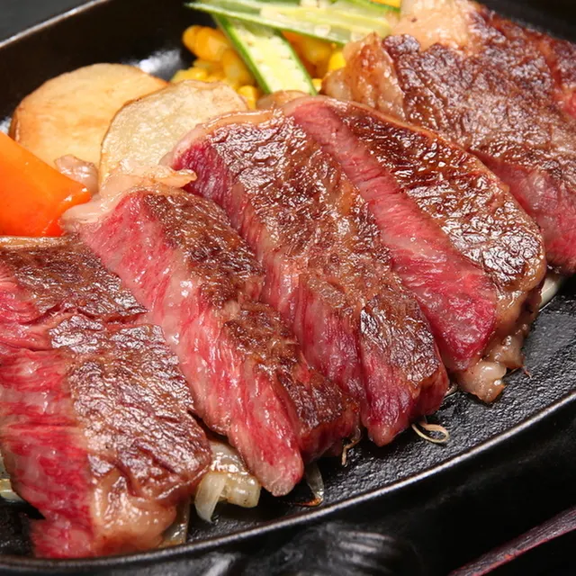
Uemura Biyondo
かに王
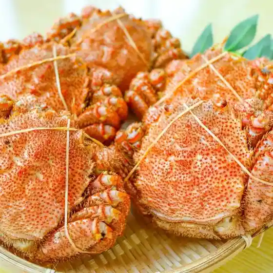
Kani Ou
たらこ家 虎杖浜
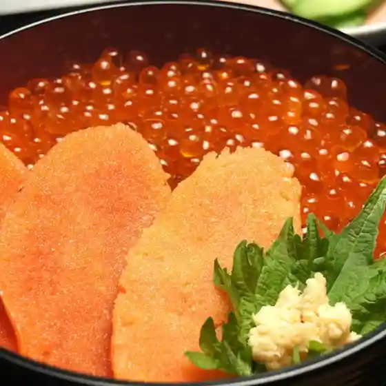
Tarako Ie Itadori Hama
界 ポロト
Kai Poroto
ことぶき苑
Kotobuki En
しんばし
Shinbashi
白老駅北観光インフォメーションセンター
Shiraoi Eki Kita Kankou Infomeeshonsentaa
虎屋
Tora Ya
さいとう釣堀園
Saitou Tsuribori Sono
山菜料理のグランマ
Sansai Ryouri No Guranma
マザーズプラス
Mazaazupurasu
手打ち蕎麦と珈琲 てんぞう
Teuchi Chi Soba To Koohii Tenzou
あけぼの
Akebono
日海 本社
Nichi Umi Honsha
セイコーマート 白老虎杖浜店
Seikoomaato Shiraoi Itadori Hama Mise
ななかまど
Nanakamado
味処ひげ親じ
Ajidokoro Hige Oya Ji
串処 笑楽
Kushi Tokoro Warai Raku
虎杖浜 かんばら
Itadori Hama Kanbara
Sights
Poroto Forest
Poroto Forest